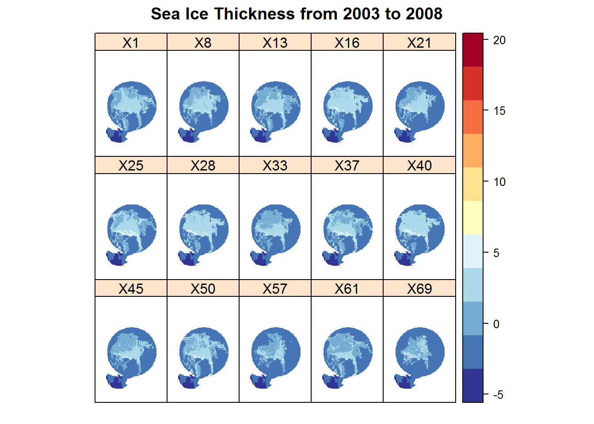

Long Term and Short Term Changes in Sea Ice Thickness
Amelia Lesniak
Introduction
As an environmental student studying climate change, I am highly interested in the most substantially affected area on the globe: the Arctic. With rising temperatures comes sea ice extent and thickness changes. Such changes are easily detected with satellite imagery. In the following report, I have acquired data from the National Snow and Ice Data Center via the “Ice, Cloud, and Land Elevation Satellite” (ICESat), “Geoscience Laser Altimeter System” (GLAS), and the “Special Sensor Microwave/Imager” (SSM/I) presented by NASA. I have selected sea ice thickness data between the years 2003 and 2008 as a simple representation of sea ice trends. I believe it is important to take into account not only long term trends but also month by month trends. This is information vital to conservation biogeographers and those interested in climate change as a whole. My hypothesis regarding this project is that I will see a declining trend in sea ice thickness changes over the entire course of the six years and over the 69 months I believe I will see much fluctuation in sea ice thickness and not just all incline or all decline.
Materials and methods
In order to see trends easily in sea ice thickness, you must consider short and long term trends. My steps in accomplishing this are as follows: 1. Acquire and download data from National Snow and Ice Data Center 2. Display the thickness for the total 69 months from 2003 to 2008 to see short term trends 3. Display the thickness for the first month of 2003 and the last month of 2008 4. Download the Arctic boundary to further isolate the study area 5. Create a linear regression displaying the month against the average sea ice thickness 6. Visualize the difference via subtracting the 2003 thickness from the 2008 thickness, visualize the slope
There were a total of 69 months being observed in this dataset represented from 2003 to 208. In order to make the short term data more visually understandable, I chose to start from month 1 and display each month recorded by continuously adding off of the previous months until the final 69th month. I then renamed that specific month and year to the number month it was in the 69 month sequence. For example, February 2004 became titled “13” as this was the 13th month. This makes it simpler for people to see changes short term in terms of a monthly basis.
Load any required packages in a code chunk (you may need to install some packages):
knitr::opts_chunk$set(cache = TRUE, echo = TRUE, warning = FALSE, message = FALSE, fig.align = 'center') # cache the results for quick compiling
# Loading packages.
library(raster)
library(rgdal)
library(dplyr)
library(ggplot2)
library(rasterVis)
library(maps)
library(spocc)
library(tidyr)
library(broom)# Reading files.
boundary <- readOGR(dsn = "C:/Users/Local1/Documents/R Project/ARPA_polygon",layer = "ARPA_polygon")## OGR data source with driver: ESRI Shapefile
## Source: "C:/Users/Local1/Documents/R Project/ARPA_polygon", layer: "ARPA_polygon"
## with 2 features
## It has 4 fieldsboundary <- boundary[boundary$OBJECTID==2,]
tif_wd <- "C:/Users/Local1/Documents/R Project/Thickness/tif"
tifname <- list.files(tif_wd)
tifname <- tifname[-16]
st <- stack()
for (i in tifname){
r <- raster(file.path(tif_wd, i))
st <- stack(st, r)
}
projection(st) <- CRS(proj4string(boundary))
st_mask <- mask(st, boundary)# n <- c("20030203", "20030911", "20040203", "20040506", "20041011", "20050203", "20050506", "20051011",
# "20060203", "20060506", "20061011", "20070304", "20071011", "20080203", "20081010")
# Change the name of raster file based on the number of month.
n <- c(2, 9, 2+12, 5+12, 10+12, 2+12*2, 5+12*2, 10+12*2,
2+12*3, 5+12*3, 10+12*3, 3+12*4, 10+12*4, 2+12*5, 10+12*5)
n <- n-1
names(st_mask) <- n
# Convert the stack file to a data frame.
DF <- as.data.frame(st_mask, xy = TRUE, na.rm = TRUE, centroids = TRUE)
DF$id <- 1:nrow(DF)
# Reorganize the data frame to prepare for the linear regression.
DF2 <- gather(DF, "name", "Thickness", 3:17)
DF2$Month <- substr(DF2$name, 2, length(DF2$name))
DF2$Month <- as.numeric(DF2$Month)# Perform linear regression between thickness and month for each pixel in the raster data
linear <- DF2 %>%
group_by(id) %>%
do(tidy(lm(Thickness ~ Month, data = .)))
# Select the information of slop and p-value that we need from the linear regression results
result <- linear[linear$term == "Month", c("id", "estimate", "p.value")]
# Give the results some more intuitive names
names(result) <- c("id", "Slope", "pValue")
# Combine the results with the original data frame
trend <- merge(DF2[, colnames(DF2) != "name"], result, by = "id")
# Remove the NA values in the data frame if any
trend <- trend[complete.cases(trend), ]Results
The first visualization comparing sea ice thickness in 2003 and 2008 shows slight variation in multiple areas such as the northern portion of the Arctic and also areas bordering land in the southern portion. The darker blue areas are showing thicker sea ice while lighter colors show less thickness. This next plot displays the difference in sea ice thickness between the years 2003 and 2008. The areas of greater change in sea ice thickness are indicated by lighter colors like yellow and orange while areas showing little to no change are indicated in pink. The polygon shape of the Arctic was isolated in order to see the area of focus more clearly.
spplot(st_mask,
col.regions = rev(brewer.pal(11, "RdYlBu")), cuts = 10,
main = "Sea Ice Thickness from 2003 to 2008")
firstThickness <- st_mask[[1]]
lastThickness <- st_mask[[15]]
names(firstThickness) <- "First Month"
names(lastThickness) <- "Last Month"
spplot(stack(firstThickness, lastThickness),
col.regions = rev(brewer.pal(11, "RdYlBu")), cuts = 10,
main = "Sea Ice Thickness in the First Month and Last Month")
diff <- lastThickness - firstThickness
names(diff) <- "Thick Difference"This next visualization is used in order to see trends across 15 of the 69 total months spread out from February 2003 to October 2008. Similarly to my first plot displaying the years 2003 and 2008 side by side, this plot indicates sea ice thickness being greater in dark blue areas and lesser in lighter areas with colors such as pink or yellow.
# Calculate the average thickness for each month
avgThickness <- trend %>%
group_by(Month) %>%
summarize(avgThickness = mean(Thickness))
# Create a scatterplot between the average thickness and month, and add a fitting line to show the general trend of average thickness
# (the shaded area represents the confidence interval of the linear regression).
ggplot(avgThickness, aes(Month, avgThickness)) +
geom_point(colour = 'blue') +
geom_smooth(method = 'lm', colour = 'red') +
labs(x = "Month",
y = "Average Thickness") +
ggtitle("Average Thickness of Arctic Sea Ice from 2003 to 2008")
# Create a histogram of the slope/trend.
# As you can see, most slope/trend values here are negative, which indicates that the thickness of sea ice was decreasing at most raster pixels within our study area from 2003 to 2008.
hist(trend$Slope,
main = "Trend of Arctic Sea Ice from 2003 to 2008",
xlab = "Trend",
ylab = "Number of Pixels",
border = "darkgreen",
col = "green",
xlim = c(-0.04, 0.04),
ylim = c(0, 3.5e5))
## Rasterization
# Convert the data frame to a spatial one.
pts <- trend
coordinates(pts) <- ~ x + y
# Define the projection system for the generated spatial point data frame.
proj4string(pts) <- projection(st_mask)
# Rasterize the spatial point data frame based on our raster stack file.
slope <- rasterize(pts, st_mask, field = "Slope", fun = mean, na.rm = TRUE)
names(slope) <- "Slope"
pValue <- rasterize(pts, st_mask, field = "pValue", fun = mean, na.rm = TRUE)
names(pValue) <- "p-Value"
# Display the results.
plot(stack(diff, slope), col = rev(brewer.pal(11, "RdYlBu")),
main = "Ice Thickness from 2003 to 2008")
spplot(pValue,
col.regions = rev(brewer.pal(11, "RdYlBu")), cuts = 10,
main = "P-Value of Linear Regression Analysis")Conclusions
Looking at the thickness plots between just 2003 and 2008, you can see a clear change in thickness around the southern portion of the Arctic. Various sections of pink coloration appear as darker and more blue in 2008 than in 2003. This coincides with my original hypothesis that sea ice thickness decreases as time passes, in the long term. My spplot for the monthly trends of the Arctic sea ice thickness indicates great variation amongst the months. You can visibly see the greatest areas of thickness in the months 25, 28, 37, 40, 45, and 50. This translates to February 2005, May 2005, February 2006, May 2006, October 2006, and March 2007.
References
=